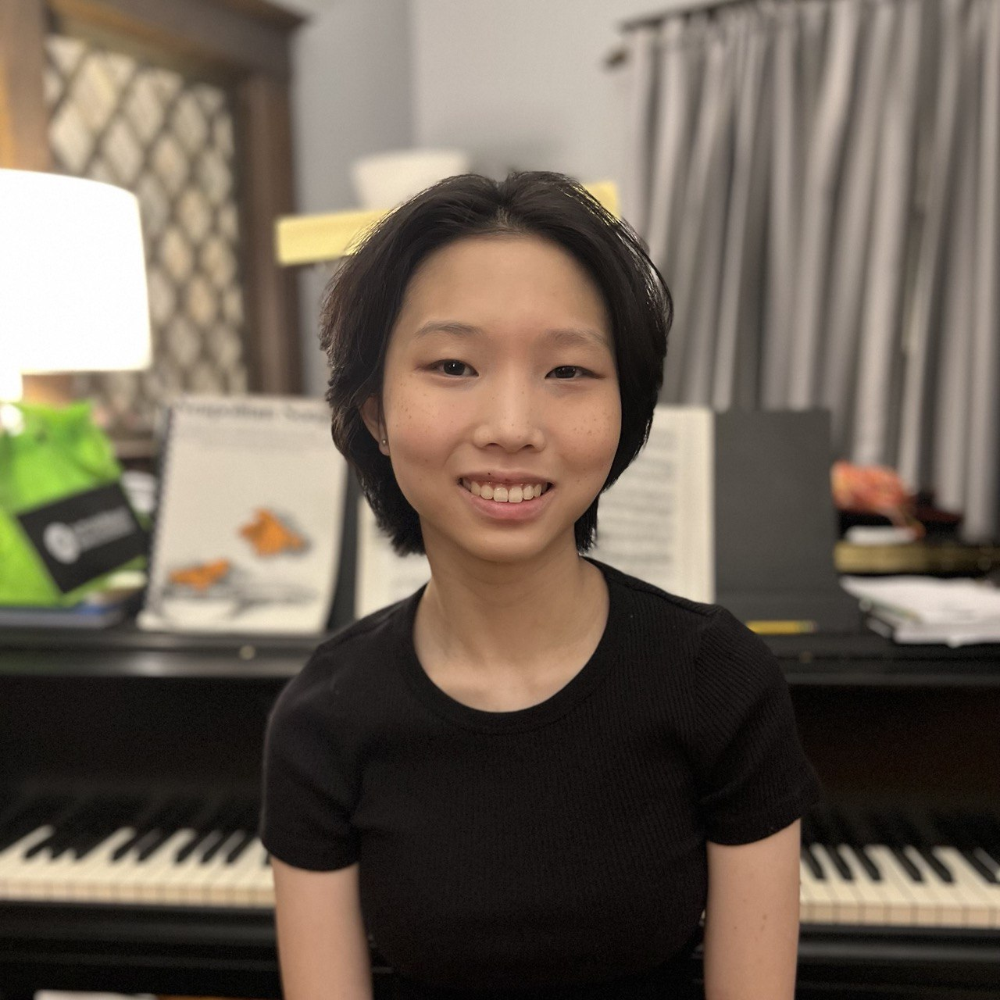

Anna Lee


Welcome to my site!
Hi! I'm Anna Lee, a junior studying Computer Science at Carnegie Mellon University, Pittsburgh, and I'm pursuing a systems concentration. I'm interested in algorithm design, computer systems, and croaking in DPAs. I also have a passion for teaching, and have been a teaching assistant for five semesters (four with 15-112 and one with 15-210).
This summer, I was the content creation division lead for 15-112, writing daily recitation lesson plans, weekly practice quizzes and extra practice problems, and generally croaking.
You can find my resume here.
Selected Coursework:
- Introduction to Computer Systems (15-213)
- Great Ideas in Theoretical Computer Science (15-251)
- Parallel and Sequential Data Structures and Algorithms (15-210)
- Algorithm Design and Analysis (15-451)
- Fundamentals of Programming Languages (15-312)
Teaching:
- Teaching Assistant for 15-112 (S22)
- Assistant Grading Division Lead for 15-112 (F22)
- Teaching Assistant for 15-112 (S23)
- Content Division Lead for 15-112 (N23)
- Teaching Assistant for 15-210 (F23)